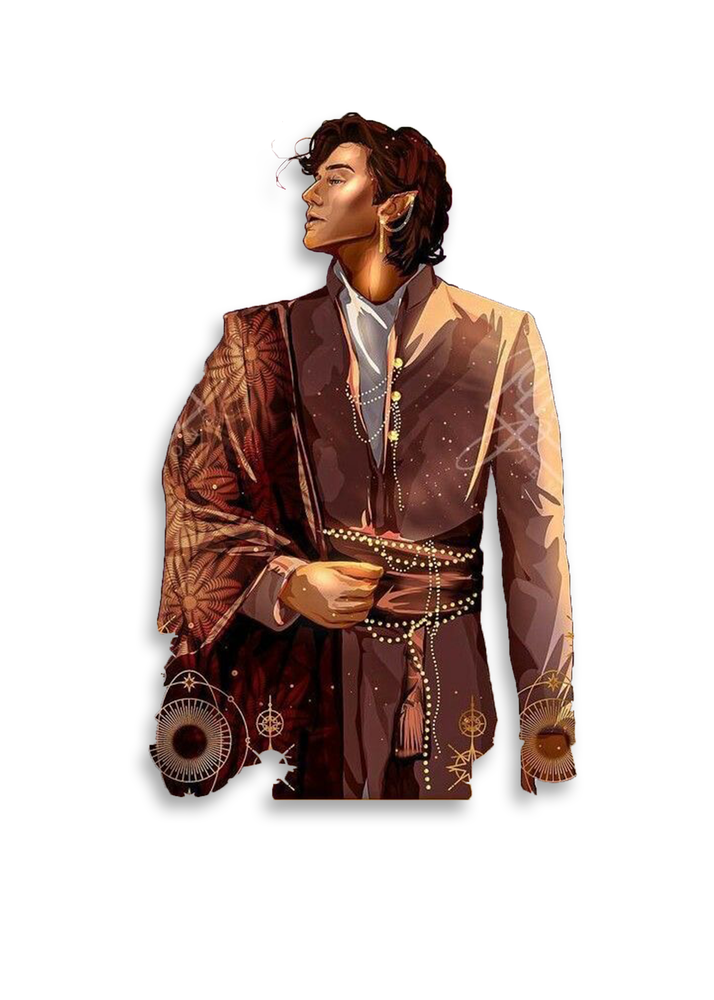
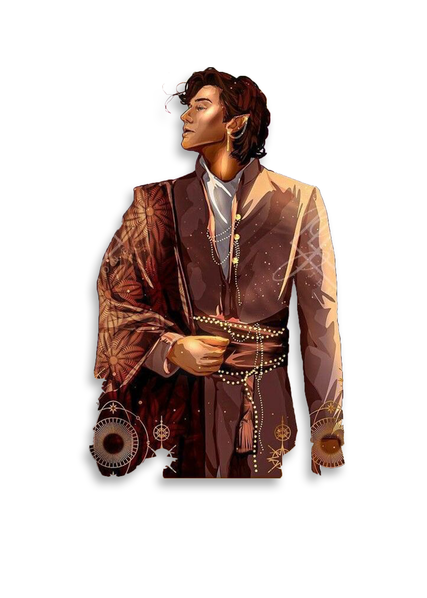
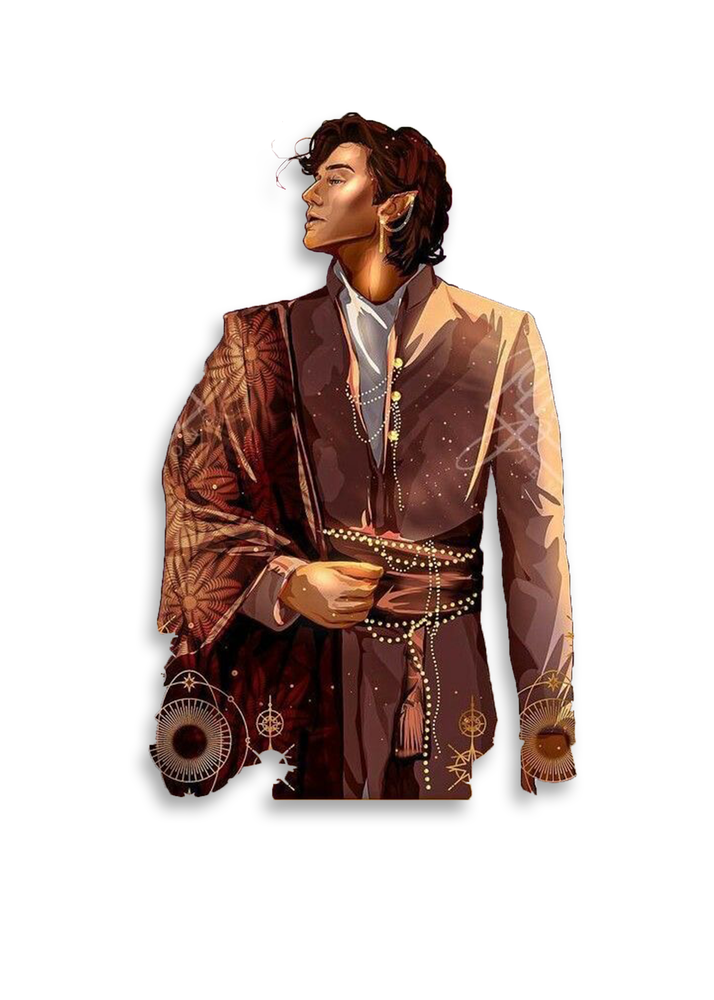
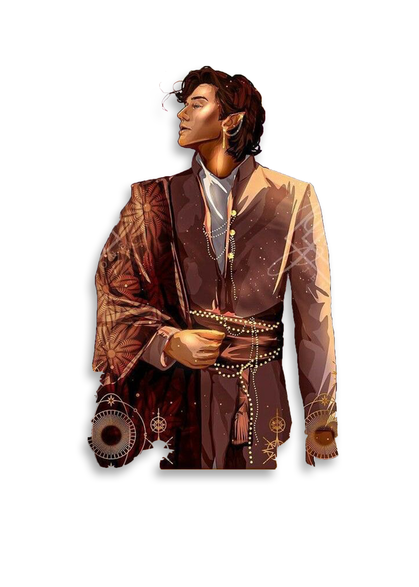

The Dawn Court is one of the seven courts in Prythian, and one of the three Solar Courts.
Its sky is cobalt and tinged by the rose remnants of sunrise long into the day, the edges of soft clouds gild with golden light. The air has lingering dewy freshness in the air. It is a lush, eternal countryside rich with the weight of summer upon it.
Dawn's territory is set in small cities that specialized in tinkering, clockwork, healing magic, and clever things. The towns were red-roofed villages with sparkling rivers.Thesan is the High Lord of the Dawn Court who "glowed the brightest of all" the High Lords.